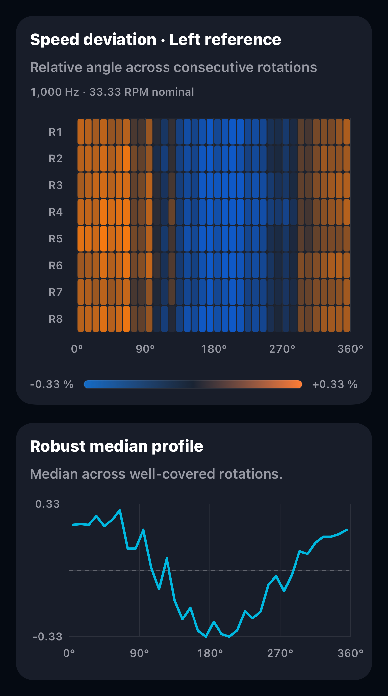
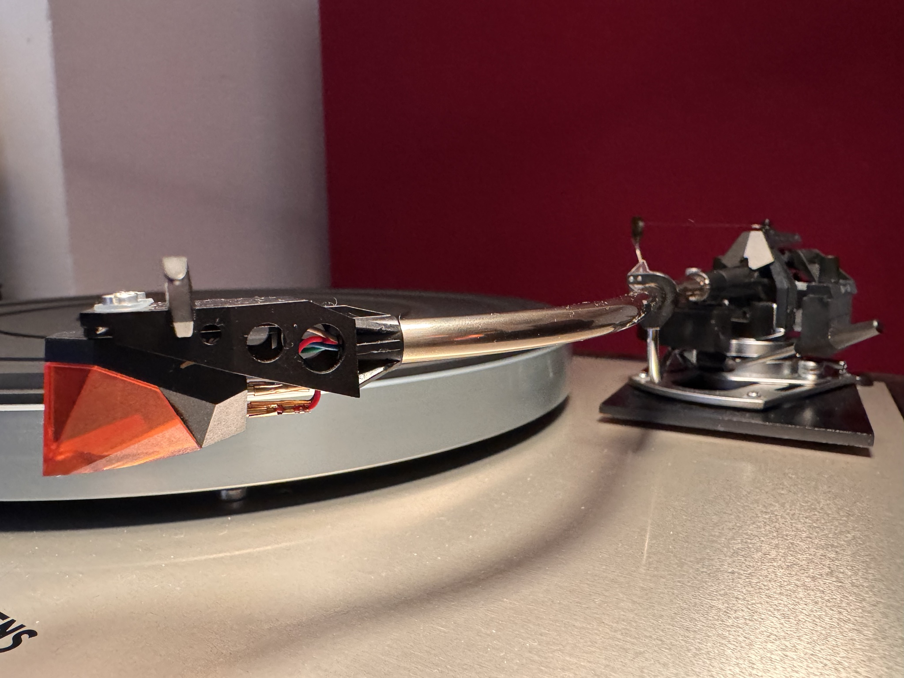
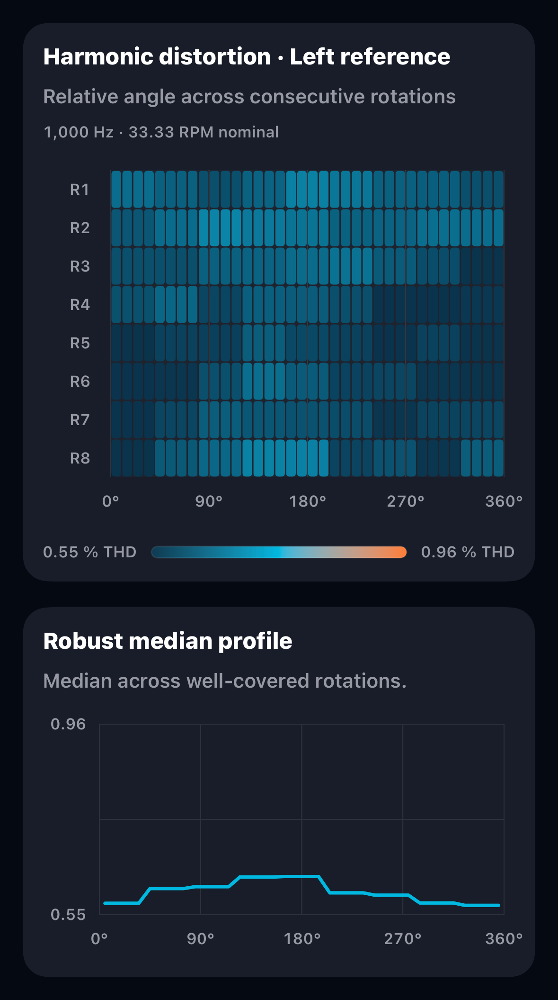
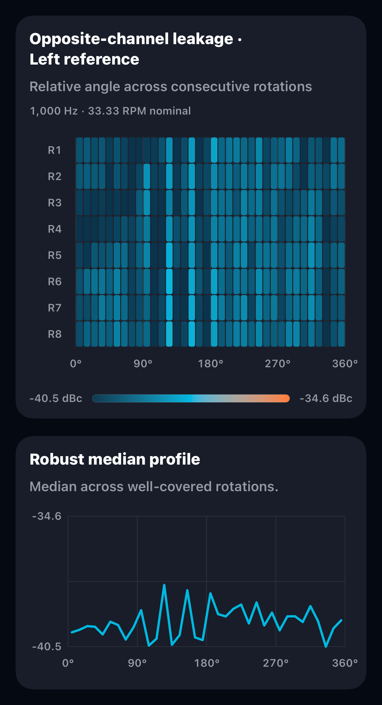
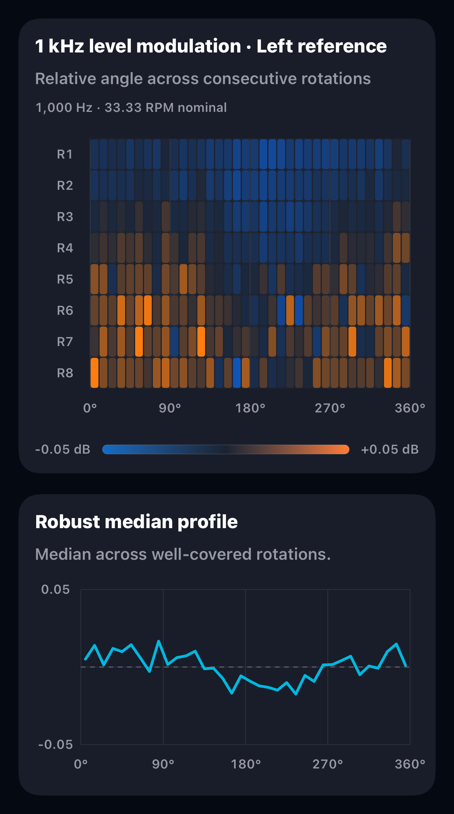

Speed deviation

Left channel selected

Groove Scope measurement · GS-2026-0018
Very satisfied great 3D image
Values exported from the saved capture.
Rotation fingerprints
Each view pairs the angular heatmap with its robust median profile. Choose L or R on each card.

Left channel selected

Left channel selected

Left channel selected

Left channel selected
Channel labels identify the Left-only and Right-only reference tracks. Scales, angular alignment and quality notes are retained in each export.
| Channel balance | L-R +0.43 dB |
|---|---|
| Playback RPM | 33.20 RPM • -0.39% vs 33 1/3 • Settled min 33.07 RPM • Settled max 33.31 RPM • Span 0.24 RPM |
| DIN-shaped wow & flutter RMS | 0.059% |
| Raw speed variation | Unweighted RMS ±0.210% • 2-sigma ±0.420% |
| Raw wow/flutter components | Unweighted wow RMS 0.199% • Unweighted flutter RMS 0.061% |
| 1 kHz Electrical Crosstalk | L→R -39.7 dB • R→L -35.5 dB • Balance 4.27 dB • Avg separation 37.6 dB |
| Distortion diagnostics | L 0.59% THD • R 0.64% THD • THD L-R -0.05 pp • H2 R 0.7 dB higher • H3 R 2.6 dB higher |
| Harmonic reliability | The right channel's third harmonic changed most during recording. Repeat before changing the cartridge setup. |
| Harmonic profile | L 2nd -44.7 dB • 3rd -66.6 dB • 4th -70.6 dB • 5th -71.3 dB | R 2nd -43.9 dB • 3rd -64.0 dB • 4th -64.9 dB • 5th -68.7 dB |
| Further investigation | A large L/R difference was observed in crosstalk. Check routing and gain, then repeat the capture. If the difference persists, investigate with General Reference Level and 1 kHz channel suite in Groove Scope Studio, using the matching test records. |
| Session recommendation | Confirm the speed result with another valid capture, then correct the deck speed if the same error repeats. Single-session observation — repeat variable diagnostics before adjusting anti-skate, zenith, azimuth, VTA, or VTF. |
| Method | DIN-shaped wow & flutter RMS is an interim diagnostic, not an IEC/DIN weighted-peak result. Raw speed-variation, wow and flutter values are unweighted diagnostic estimates. |
|---|
The saved measurement, generated plots and supplied photograph are archived with this record. DSR reviewed this contribution before publication. Capture and exporter versions are recorded separately. No raw audio is included.
Results describe the complete playback chain. Quality and repeatability notes remain part of the source record.